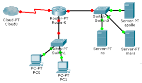

Nanosegundo
Unidad de tiempo equivalente a una milmillonésima parte de un segundo, usada en informática para medir la velocidad de los procesadores.
Nodo
Punto de intersección o conexión dentro de una red informática, como una computadora o un servidor.
